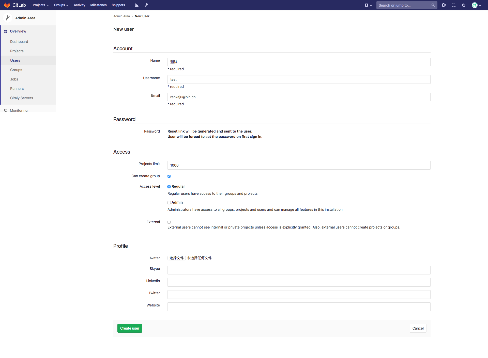
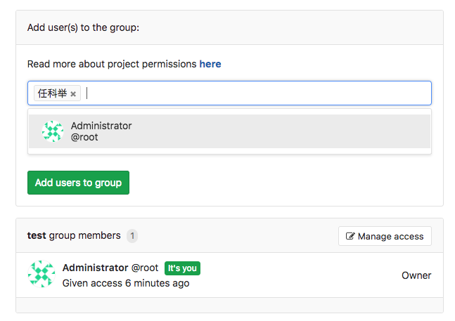
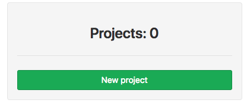

gitlab¶
- 一个基于 GIT 的源码托管解决方案
- 基于 Ruby on rails 开发
- 集成了 nginx postgreSQL redis sidekiq 等组件
安装¶
| 组件 | 作用 |
| nginx | 静态 Web 服务器 |
| gitlab-shell | 用于处理 Git 命令和修改 authorized keys 列表 |
| gitlab-workhorse | 轻量级的反向代理服务器 |
| logrotate | 日志文件管理工具 |
| postgresql | 数据库 |
| redis | 缓存数据库 |
| sidekiq | 用于在后台执行队列任务（异步执行） |
| unicorn | Gitlab Rails 应用是托管在这个服务器上面的 |
RHEL/CentOS¶
安装并配置必要的依赖项
在 CentOS7/RHEL 系统中，下面的命令将会在系统防火墙中开放 HTTP/HTTPS 和 SSH 端口
sudo yum install -y curl policycoreutils-python openssh-server sudo systemctl enable sshd sudo systemctl start sshd sudo firewall-cmd --permanent --add-service=http sudo firewall-cmd --permanent --add-service=https sudo systemctl reload firewalld
接下来，安装Postfix以发送通知电子邮件。如果要使用其他解决方案发送电子邮件，请跳过此步骤并在安装GitLab后配置外部SMTP服务器。
sudo yum install postfix sudo systemctl enable postfix sudo systemctl start postfix添加 GitLab 软件包存储库并安装软件包
新建
/etc/yum.repos.d/gitlab-ce.repo, 内容为：cat << "EOF" > /etc/yum.repos.d/gitlab-ce.repo [gitlab-ce] name=Gitlab CE Repository baseurl=https://mirrors.tuna.tsinghua.edu.cn/gitlab-ce/yum/el$releasever/ gpgcheck=0 enabled=1 EOF
sudo yum makecache sudo yum install -y gitlab-ce
浏览主机并登陆
首次访问时，您将被重定向到密码重置屏幕。提供初始管理员帐户的密码，您将被重定向回登录屏幕。使用默认帐户的用户名
root登录。
Ubuntu¶
安装并配置必要的依赖项
sudo apt-get update sudo apt-get install -y curl openssh-server ca-certificates
接下来，安装Postfix以发送通知电子邮件。如果要使用其他解决方案发送电子邮件，请跳过此步骤并在安装GitLab后配置外部SMTP服务器。
sudo apt-get install -y postfix
在Postfix安装期间，可能会出现配置屏幕。选择 “Internet Site” 并按Enter键。使用服务器的外部DNS作为“邮件名称”，然后按Enter键。如果出现其他屏幕，请继续按Enter键接受默认值。
添加GitLab软件包存储库并安装软件包
首先信任 GitLab 的 GPG 公钥:
curl https://packages.gitlab.com/gpg.key 2> /dev/null | sudo apt-key add - &>/dev/null
再选择你的 Debian/Ubuntu 版本，文本框中内容写进
/etc/apt/sources.list.d/gitlab-ce.listsudo cat << EOF > /etc/apt/sources.list.d/gitlab-ce.list deb https://mirrors.tuna.tsinghua.edu.cn/gitlab-ce/ubuntu xenial main EOF
安装 gitlab-ce ：
sudo apt-get update sudo apt-get install gitlab-ce
浏览主机并登陆
首次访问时，您将被重定向到密码重置屏幕。提供初始管理员帐户的密码，您将被重定向回登录屏幕。使用默认帐户的用户名
root登录。
命令¶
状态查询¶
通过命令可以查看各服务组件的运行状态
gitlab-ctl status
run: alertmanager: (pid 12966) 4279s; run: log: (pid 12980) 4279s
run: gitaly: (pid 12895) 4281s; run: log: (pid 12978) 4279s
run: gitlab-monitor: (pid 12928) 4280s; run: log: (pid 12936) 4280s
run: gitlab-workhorse: (pid 12877) 4281s; run: log: (pid 12950) 4280s
run: logrotate: (pid 20523) 726s; run: log: (pid 12952) 4280s
run: nginx: (pid 12398) 4332s; run: log: (pid 12951) 4280s
run: node-exporter: (pid 12620) 4314s; run: log: (pid 12924) 4280s
run: postgres-exporter: (pid 12987) 4279s; run: log: (pid 13069) 4278s
run: postgresql: (pid 12125) 4372s; run: log: (pid 12864) 4281s
run: prometheus: (pid 12943) 4280s; run: log: (pid 12961) 4279s
run: redis: (pid 12050) 4378s; run: log: (pid 12863) 4281s
run: redis-exporter: (pid 12705) 4302s; run: log: (pid 13068) 4279s
run: sidekiq: (pid 12371) 4334s; run: log: (pid 12931) 4280s
run: unicorn: (pid 12328) 4340s; run: log: (pid 12930) 4280s
也可以指定查看某个服务
gitlab-ctl status nginx
run: nginx: (pid 12398) 4463s; run: log: (pid 12951) 4411s
查看日志¶
如果想查看某个服务的日志，可以使用如下命令
gitlab-ctl tail nginx
==> /var/log/gitlab/nginx/current <==
==> /var/log/gitlab/nginx/error.log <==
==> /var/log/gitlab/nginx/gitlab_access.log <==
192.168.47.1 - - [27/Sep/2018:11:59:37 +0800] "POST /profile/preferences HTTP/1.1" 200 585 "http://192.168.47.132/profile/preferences" "Mozilla/5.0 (Macintosh; Intel Mac OS X 10_13_6) AppleWebKit/537.36 (KHTML, like Gecko) Chrome/69.0.3497.100 Safari/537.36"
192.168.47.1 - - [27/Sep/2018:11:59:42 +0800] "POST /profile/preferences HTTP/1.1" 200 585 "http://192.168.47.132/profile/preferences" "Mozilla/5.0 (Macintosh; Intel Mac OS X 10_13_6) AppleWebKit/537.36 (KHTML, like Gecko) Chrome/69.0.3497.100 Safari/537.36"
192.168.47.1 - - [27/Sep/2018:11:59:43 +0800] "GET /profile/keys HTTP/1.1" 200 7587 "http://192.168.47.132/profile/preferences" "Mozilla/5.0 (Macintosh; Intel Mac OS X 10_13_6) AppleWebKit/537.36 (KHTML, like Gecko) Chrome/69.0.3497.100 Safari/537.36"
192.168.47.1 - - [27/Sep/2018:11:59:43 +0800] "GET /assets/webpack/pages.profiles.keys.963cb5f3.chunk.js HTTP/1.1" 200 803 "http://192.168.47.132/profile/keys" "Mozilla/5.0 (Macintosh; Intel Mac OS X 10_13_6) AppleWebKit/537.36 (KHTML, like Gecko) Chrome/69.0.3497.100 Safari/537.36"
192.168.47.1 - - [27/Sep/2018:11:59:45 +0800] "GET /profile/chat_names HTTP/1.1" 200 6725 "http://192.168.47.132/profile/keys" "Mozilla/5.0 (Macintosh; Intel Mac OS X 10_13_6) AppleWebKit/537.36 (KHTML, like Gecko) Chrome/69.0.3497.100 Safari/537.36"
192.168.47.1 - - [27/Sep/2018:11:59:47 +0800] "GET / HTTP/1.1" 200 7539 "http://192.168.47.132/profile/chat_names" "Mozilla/5.0 (Macintosh; Intel Mac OS X 10_13_6) AppleWebKit/537.36 (KHTML, like Gecko) Chrome/69.0.3497.100 Safari/537.36"
192.168.47.1 - - [27/Sep/2018:12:01:58 +0800] "GET /projects/new HTTP/1.1" 200 13013 "http://192.168.47.132/" "Mozilla/5.0 (Macintosh; Intel Mac OS X 10_13_6) AppleWebKit/537.36 (KHTML, like Gecko) Chrome/69.0.3497.100 Safari/537.36"
192.168.47.1 - - [27/Sep/2018:12:01:58 +0800] "GET /assets/webpack/commons~pages.projects~pages.projects.activity~pages.projects.artifacts.browse~pages.projects.artifa~1485fd35.d346ca1a.chunk.js HTTP/1.1" 200 7340 "http://192.168.47.132/projects/new" "Mozilla/5.0 (Macintosh; Intel Mac OS X 10_13_6) AppleWebKit/537.36 (KHTML, like Gecko) Chrome/69.0.3497.100 Safari/537.36"
192.168.47.1 - - [27/Sep/2018:12:01:58 +0800] "GET /assets/webpack/pages.projects.new.0fa98a30.chunk.js HTTP/1.1" 200 1667 "http://192.168.47.132/projects/new" "Mozilla/5.0 (Macintosh; Intel Mac OS X 10_13_6) AppleWebKit/537.36 (KHTML, like Gecko) Chrome/69.0.3497.100 Safari/537.36"
192.168.47.1 - - [27/Sep/2018:12:02:11 +0800] "GET /import/github/new HTTP/1.1" 200 6206 "http://192.168.47.132/projects/new" "Mozilla/5.0 (Macintosh; Intel Mac OS X 10_13_6) AppleWebKit/537.36 (KHTML, like Gecko) Chrome/69.0.3497.100 Safari/537.36"
==> /var/log/gitlab/nginx/gitlab_error.log <==
==> /var/log/gitlab/nginx/access.log <==
也可以前往服务组件的日志目录进行查看：
ll /var/log/gitlab/
total 0
drwx------ 2 gitlab-prometheus root 82 Sep 27 11:01 alertmanager
drwx------ 2 git root 82 Sep 27 11:01 gitaly
drwx------ 2 git root 82 Sep 27 11:01 gitlab-monitor
drwx------ 2 git root 216 Sep 27 11:00 gitlab-rails
drwx------ 2 git root 30 Sep 27 10:59 gitlab-shell
drwx------ 2 git root 82 Sep 27 11:01 gitlab-workhorse
drwx------ 2 root root 47 Sep 27 11:00 logrotate
drwxr-x--- 2 root gitlab-www 131 Sep 27 11:00 nginx
drwx------ 2 gitlab-prometheus root 82 Sep 27 11:01 node-exporter
drwx------ 2 gitlab-psql root 82 Sep 27 11:01 postgres-exporter
drwx------ 2 gitlab-psql root 82 Sep 27 11:01 postgresql
drwx------ 2 gitlab-prometheus root 82 Sep 27 11:01 prometheus
drwxr-xr-x 2 root root 28 Sep 27 10:59 reconfigure
drwx------ 2 gitlab-redis root 82 Sep 27 11:01 redis
drwx------ 2 gitlab-redis root 82 Sep 27 11:01 redis-exporter
drwx------ 2 git root 82 Sep 27 11:01 sidekiq
drwx------ 2 git root 134 Sep 27 11:01 unicorn
配置¶
安装完成后需要进行的配置，配置文件如下表所示：
| 路径 | 内容 |
/var/opt/gitlab/git-data/repostitories/root |
库默认存储目录 |
/opt/gitlab |
应用代码和相应的依赖程序 |
/var/opt/gitlab |
gitlab reconfigure 命令编译后的应用数据和配置文件，不需要人为修改配置 |
/etc/gitlab |
配置文件目录 |
/var/log/gitlab |
此目录下存放了 gitlab 各个组件产生的日志 |
/var/opt/gitlab/backups/ |
备份文件生成的目录 |
修改配置文件¶
因为 gitlab 是使用 ruby 编写的，所以它的配置文件后缀名是 rb。
vim /etc/gitlab/gitlab.rb
external_url 'your_ip_address_or_domain_name'
修改完成之后，需要重新加载配置文件，执行如下命令：
sudo gitlab-ctl reconfigure
执行完成后，通过浏览器访问IP地址或域名，因为首次访问，Gitlab 需要你为 root 设置一个新的密码。
注册完成之后，就会跳转到访问页面，此时你可以使用 root 用户访问，但是建议额外注册一个管理员用户来管理 Gitlab 服务。

变更主配置文件¶
每当我们要变更配置文件，需要执行以下步骤
gitlab-ctl reconfigure重置配置文件gitlab-ctl show-config验证配置文件gitlab-ctl restart重启配置文件
修改 root 用户密码¶
对于普通用户而言，通过系统的重置密码，接收重置密码邮件即可，可是 Gitlab 的管理员账号，缺省的邮箱是一个不存在的邮箱地址，所在没有办法通过邮箱来重置密码。
使用命令 gitlab-rails console production 修改
gitlab-rails console production
-------------------------------------------------------------------------------------
GitLab: 11.3.0 (17bd59a)
GitLab Shell: 8.3.3
postgresql: 9.6.8
-------------------------------------------------------------------------------------
Loading production environment (Rails 4.2.10)
irb(main):001:0>
irb(main):002:0* user = User.where(id: 1).first
=> #<User id:1 @root>
irb(main):003:0> user.password=12345678
=> 12345678
irb(main):004:0> user.password_confirmation=12345678
=> 12345678
irb(main):005:0> user.save!
Enqueued ActionMailer::DeliveryJob (Job ID: de0469c0-dea5-488d-9e04-8d4c550739c5) to Sidekiq(mailers) with arguments: "DeviseMailer", "password_change", "deliver_now", gid://gitlab/User/1
=> true
irb(main):006:0> quit
权限管理¶
使用 root 用户进入 Gitlab 服务首页，如下所示

点击导航栏中的 admin area 小扳手进入管理界面

创建用户¶
点击
New User按钮，创建新的用户。
进入新建用户配置页面
配置选项
内容 选项 含义与作用 Account Name 账户名称 Username 用户名 Email 邮箱地址 Password Password 密码 Password confirmation 确认密码 Access Projects limit 项目限制 Can create group 是否能创建组 Access level Regular (普通用户) Access level Admin（管理员） External 除非明确授予访问权限，否则外部用户无法查看内部或私有项目。此外，外部用户无法创建项目或组。 Profile Acatar 头像 Skype Linkedin Twitter Website
创建组¶
为什么需要有组？比如公司现在有开发团队，有不同项目，可以按照不同项目来分配组，组内包含了不同的成员。
点击
New Group按钮，创建新的用户组。
进入新建组配置页面

配置选项
选项 含义与作用 Group path 组项目 URL 路径 Group name 组项目名称 Description 组项目描述 Group avatar 组项目图标 Visibility Level Private（该组及其项目只能由成员查看） Internal（任何登录用户都可以查看该组和任何内部项目） Public（无需任何身份验证即可查看该组和任何公共项目） Allow users to request access（如果公开或内部可见性，则允许用户请求访问权限） Large File Storage 允许该组中的项目使用Git LFS Two-factor authentication 要求此组中的所有用户都设置双因素身份验证 组创建成功

组授权
组创建完成后，组内是没有用户的，创建组的用户就要赋权给其他的用户
选择用户加入组
设置用户在组中的角色

查看组成员

创建项目¶
点击
New project按钮，创建新的项目。进入新建项目配置页面
选项配置
选项 含义与作用 Project name 项目名称 Project URL 项目URL Project slug 项目块 Project description 项目描述 Visibility Level Private（私有） Internal（内部） Public（公有） Initialize repository with a README、 初始化存储库的 README 文件
项目密钥¶
给用户添加密钥
当我们创建完成了组、用户与项目之后，用户需要上传公钥，否则 SSH 协议不能使用。
点击页面右上方的用户头像

进入用户配置页面，查看左侧用户配置选项

点击
SSH keys，为用户添加 SSH 公钥
本地生成密钥对
用户本地主机生成密钥对
$ ssh-keygen -b 4096 -t rsa -f ~/.ssh/gitlab -N '' Generating public/private rsa key pair. Your identification has been saved in /Users/renkeju/.ssh/gitlab. Your public key has been saved in /Users/renkeju/.ssh/gitlab.pub. The key fingerprint is: SHA256:s427VY2KNaGXemMwu3ird02IK4/lo7OHCA7vLHfcAmI renkeju@laptop.local The key's randomart image is: +---[RSA 4096]----+ | | | | | . | | . o o | | S.=.o . | |oEo .&.+. | |.= + o .B.Bo | |..+ = ==**... | | +o. .*@B= | +----[SHA256]-----+
查看密钥对
$ ll .ssh/gitlab* -rw------- 1 renkeju staff 3.2K 9 27 15:46 .ssh/gitlab -rw-r--r-- 1 renkeju staff 746B 9 27 15:46 .ssh/gitlab.pub
复制公钥
$ cat .ssh/gitlab.pub ssh-rsa AAAAB3NzaC1yc2EAAAADAQABAAACAQDIAmL6Hgb1hyi8ErvF2kd0o4lYVwn8EecdyMBrSViOjj0FxFz5NBXVZgZziuKiYN9EBQt+cf+ehbUquLJY/w5S3Rg08x8QMKnJCtQ0vK8vmuO6ljUxHlBzyQiSs4dQWIwhAUL5hJ+BrAHp+PbPvuX7nwZILPCGLZTlMIBTWIQtUwdZQDQmWZ0xxsXlHoa0w4NNgUcJOgrFF2A0E4jrzAOdUKWQfhCSBXEd6BZJ+QGOcRmIL3fPasJL3+B8X5GNs56DpXeByXLGSwgU605bog9oU6N3WqHvoLa1LwwUmpfospEB1DimS/7a31nMPera026Hvr851QUUAxZGjpYxZodJ1QcscH4ZOgafFZnH+8UiU6LWreb4cj/o56i+TuKntOAlQNb6R0M9C4E3B5BQI8l6Ob5nkr7ltujDTJGtTFPlF0oBxEqgkpnvjkLicZ6biCDa3f2bEU7k5Ez/kyrA1w639gnfF58KzyZuuhM9HG1ANK4KO9LGr/5MMqjbkr8ksiqcNG17YSmdQVWqmLU5Ai2tEnA5KLjHwiv2MXrzpBe1elIUXW7AHps+Tx+e/Q56K3vfJ43adxh+E+cFDqPyjpsBWdc6m7Js7hXuQ2Z5iFSVfyh9YxwmJudHLTkhTZhJi18qjnPyNy9Q/WwKVRq0NWXfqcd3aWjvmNXLe7HAXfhi7Q== renkeju@laptop.local
配置公钥
将公钥黏贴到文本框内
已添加的公钥列表

部署密钥¶
每个 Repository 部署密钥¶
deploy keys 允许使用单个 SSH 密钥对 对一个或多个项目进行只读或读写（如果已启用）访问。
这对于将Repository克隆岛 Continuous Integration (CI) 服务器非常有用。通过使用部署密钥，您不必设置虚拟用户账户。如果您是项目维护者或所有者，则可以在”Repository“部分下的项目设置中添加部署密钥。为新部署密钥指定标题并黏贴 SSH 公钥。在这之后，使用相应的 SSH 私钥的计算机具有对项目有只读和读写（如果启用）访问权限。
您无法使用表单两次添加相同的部署密钥。如果要将相同的密钥添加到另一个项目，请在”从可用项目部署密钥“列表中启用它。您可以访问的所有项目的所有部署密钥都可用。该项目访问可以通过称为项目的直接成员或通过组来实现。
部署密钥可以在项目之间共享，您只需要将它们添加到每个项目中。
全局共享部署密钥¶
Global Shared Deploy keys 允许在整个 Gitlab 安装中的任何Repository上配置只读或读写（如果启用）访问。
这对于将Repository集成到安全的共享持续集成（CI）服务或其他共享服务非常有用。Gitlab 管理员可以在 Gitlab 中设置 Global Shared Deploy keys，并将私钥添加到任何共享系统。当项目维护者（或更高级别）授权将 Global Shared Deploy keys 用于其项目时，各个Repository会选择使用这些密钥公开其Repository。
与每个项目部署密钥相比，全局共享密钥可以提供更高的安全性，因为目标集成系统的管理员是唯一需要知道和配置私钥的人。
Gitlab 管理员在”部署密钥“部分下的”管理“区域中设置 Global Depoly keys 。确保密钥具有有意义的标题，因为这将是项目维护者和所有者识别要添加的正确 Global Deploy keys 的主要方式。例如，如果密钥提供对 SaaS CI 实例的访问权限，则在密钥名称中使用该服务的名称（如果它是用于全局）。在创建全局共享部署密钥时，请考虑密钥的粒度 —— 它们的使用范围非常狭窄，例如知识特定服务或更广泛的用途，例如“您需要提供对Repository的读取访问权限”。
一旦 Gitlab 管理员添加全局部署密钥，项目维护人员和所有者就可以通过展开 “部署密钥” 部分并单击任何项目可用的公共部署密钥下列出的相应密钥旁边的“启用”，将其添加到项目的 “Settings” -> “Repository” 部分中。
导航栏选择小扳手
使用具有管理员权限的用户登录才可以看到小扳手
左侧导航栏选择
Deploy keys选项点击
New deploy key按钮黏贴公钥到框内，点击
Create按钮创建切换到其他用户，添加公共权限部署密钥
启用公共部署密钥
查看已启用部署密钥
Note
只有配置了至少一个 Global Deploy keys 时，才会显示 可用于任何项目 的标题公共部署密钥。
Attention
定义全局部署密钥不会通过密钥公开任何给定的 Repository ，知道该 Repository 将 Global Deploy keys 添加到其项目中。通过这种方式，全局部署密钥可以启用其他系统的访问，但不要仅通过它们来隐式地提供任何访问。
issues¶
Gitlabn 除了提供基于 git 的基本代码托管服务外。还具备很多与软件开发协作相关的其他功能。比如 issues、Merge Requests 等。
利用 Gitlab 提供的这些功能，我们可以时间一些简单的项目管理和协作流程。这套流程借鉴很多成功的开源项目，非常适合在小型开发团队里面使用。
使用 issues 来管理需求与缺陷¶
Gitlab issues 类似于”工单系统“，是一个发布相关信息的地方。项目的所有成员都可以创建新的 issue，其他成员可以在 issue 下进行相关的讨论。
issue 本身是一个非常简单的功能，但是如果配合”标签“、”里程碑“等功能一起使用，就可以承担起一定的项目管理工作。
录入 issue¶
在项目的开发过程中，我们会碰到很多新的需求，软件 bug 等。这些需求与 bug，就是 issue 最大的来源，它们都可以作为 issue 录入到项目的 issues 中。
因为 issue 的录入门槛很低，鼓励项目成员录入 issue 后，项目很容易就会出现大量的 issues。所以我们应该严格控制每个 issue 的内容质量，确保其他人可以通过这个 issue 获取足够多的信息，提高沟通效率。
Note
不光是需求和 bug，任何和项目有关的内容都可以录入到 issue 中。
编写优秀的 ”需求“ issue¶
如果你要录入一个需求类的 issue，最好在内容的主体中包含下面的这些内容：
- 用一句话描述你的需求，并用它作为标题
- 这个需求是解决什么问题的？
- 这个需求对软件现有的功能会造成什么影响？
- 这个需求应该实现什么样的功能？
- 这个需求是否依赖其他模块提供相关的支持？
- 这个需求有哪些实现方式？【可选】
- 这些可选的实现方式分别有哪些优缺点？【可选】
编写优秀的 “bug” issue¶
如果你要录入一个 bug issue，最好在内容主题中包含下面这些内容：
- 提供出现问题的软件版本号、操作系统环境等相关信息
- 提供能够稳定复现问题的相关步骤
- 描述期待行为与当前行文
- 你对这个 bug 原因的相关分析【可选】
Review issue 并为其打上标签¶
当 issue 被创建后，应该等待项目的 owner（owner 指项目的所有者，是对项目各方面都比较了解的人，可以为多个人）对 issue 进行 Review。
Review 时，如果 owner 觉得这个 issue 满足下面的任意条件：
- 与项目本身的功能、市场定位有冲突
- 与现存 issue 有重复
- 其他不应该被保留的情况
则应该在评论中说明相关情况，并关闭该 issue。如果讲过上面的过滤后，觉得 issue 应该被继续跟进，那就应该为它打上标签，方便之后的筛选、排期等工作。
“标签”是 issue 的核心特性，为了更好的使用它，我建议采用 {type}/{value} 这样的二维标签来取代传统的 {value} 单维标签，下面是一些常用的 issue 标签：
优先级：priority¶
优先级（priority）是最重要的标签之一。它直接影响 bug 需要被响应的速度、或需求的具体排期。
priority/P0十分紧急priority/P1较为紧急priority/P2普通priority/P3不紧急
类型：kind¶
kind（类别）表示 issue 属于哪种类型
kind/bug软件缺陷kind/featrue新功能kind/enhancement改进项，模块代码重构等不影响项目功能但是改善工程质量的 issue 可归入此类kind/research技术调研类，一般以输出某类结论或报告视为结束
领域/模块：area¶
area 用于标记当前 issue 属于项目中什么领域/模块。这个分类下的具体标签有项目本身决定。比如 area/apiserver 、 area/controller 等。给 issue 打上 area 标签后，项目不同模块的相关负责人可以更方便的找到自己负责相关的 issues。
Gitlab 的标签是一个非常灵活的功能，在具体的使用中，不必拘泥于上面列出来的几种标签，可以根据当前项目特点随意调整。
Issue 的后续操作¶
当 issue 被创建、打上标签以后，就可以进行后续操作了。issue 的后续操作主要包括下面几种：
认领 issue每一个 issue 都有一个 Assignee（受理人），表示当前 issue 由谁在处理。在你准备开始具体工作前，一定要记得 issue 认领为自己所有。在 issue 下进行讨论在 issue 下可以围绕 issue 进行讨论，在讨论过程中，可以通过@USERNAME的方式通知其他人关注当前 issue。
使用 issue 做项目里程碑管理¶
除了为 issue 打上标签以外，你还可以为 issue 绑定上 milestone（里程碑），来将 issue 与某些特定的项目节点关联起来。之后便可以在 milestones 页面查看每一个里程碑的进展。
和 labels 一样，里程碑也是一个十分灵活的功能，你可以根据项目需要建立不同的里程碑，比如：
基于软件版本号：基于未来将要发布的版本号建立里程碑，比如v1.0.3、v2.0.1等等基于时间周期：基于特定的时间周期 - 比如敏捷开发中的一个 sprint - 来建立里程碑，比如Y2017-M7W3、Y2017-M7W4等等
使用 issue board¶
随着项目越来越大，项目累积的 issue 也会越来越多。而这些 issue 中有很多已经失去它的价值。
所以，为了避免有价值的 issue 淹没在这些过时的信息当中，我们应该定期 Review 现有的 issues，关闭掉那些已经过时的 issues。
基于 Merge Request 的开发流程¶
在 Gitlab 上创建的项目，所有人都不应该直接往 master 分支推送代码。而是应该在其他分支（或者 fork 项目的分支）进行开发。并最终通过创建 Merge Request（类似 Github pull request）将代码合并到 master 分支。
创建 Merge Request 并进行 Code Review¶
基于 MR 的开发流程如下：
- 开发者在自己的分支下进行开发，开发完成后，创建将该分支合并到 Master 的 Merge Request，改动进入 Review 状态。
- 进入 Review 状态的代码，将由团队内的其他一位成员（经验比较丰富、或者对该工作模块比较熟悉）对代买改动进行 Code Review。
- 大家对 Review 结果进行讨论，并提交新的修改。
- 最终达成一致后，代码被 Merge 进 Master 分支。
灵活创建新分支来避免 MR 冲突¶
我们一般会用类似与 dev_piglei 这样的分支名称进行开发，遵循着 “开发” -> “push 并创建 MR” -> “开发” 这样的工作流程。
但是，因为一个分支是严格对应到一个 MR 的，当你在同一个分支上开发不同功能时，如果 MR 一直处于 open 状态，那这些不同功能都会被推送到同一个 MR 上，对 Review 过程产生困扰。
为了避免这种情况，最好为不同的功能项创建不同的分支并各自创建 MR，比如
dev_feature_add_member 、 dev_featrue_disabled_user 。
Note
在 git 工作流方面，git-flow workflow 是一个值得学习的内容。
分拆大的 Merge Request¶
如果开发一些比较大的需求，我们通常会将他们一次实现完，然后作为一个大的 MR 来提交 Review。
但是如果每个 MR 过于复杂，会大大影响 Code Review 的效率。所以，如果你要实现一个比较复杂的特性，建议将它拆解为多个比较小的 MR 来依次提交。
假如，你要为网站的 feed 页面从零开始添加 redis 缓存功能。可能一开始想的提交这个大 MR：
[MR] 添加基于 redis 的缓存模块并为 feed 页面添加缓存并主动过期
但这个 MR 里面包含了太多内容，会增加 Review 的难度。所以可以试着将这个功能拆解为下面三个更小的 MR：
- [MR] 添加基于缓存的模块
- [MR] 为缓存模块添加 Redis 作为存储后端
- [MR] 为 feed 页面提供缓存，并主动过期
Attention
- 超过 1000 行的代码改动 Review 起来非常困难
- 可以使用 feature flag（功能开关）在 PR 完全完成前屏蔽部分功能
备份管理¶
对 gitlab 进行备份将会创建一个包含所有库和附件的文档文件。对备份的恢复只能恢复到与备份时的 gitlab 相同的版本。将 gitlab 迁移到另一台服务器上的最佳方法就是通过备份和还原。
gitlab 提供了一个简单的命令来备份整个 gitlab，并且能灵活的满足需求。
配置文件¶
### Backup Settings
###! Docs: https://docs.gitlab.com/omnibus/settings/backups.html
# gitlab_rails['manage_backup_path'] = true
# gitlab_rails['backup_path'] = "/var/opt/gitlab/backups"
###! Docs: https://docs.gitlab.com/ce/raketasks/backup_restore.html#backup-archive-permissions
# gitlab_rails['backup_archive_permissions'] = 0644
# gitlab_rails['backup_pg_schema'] = 'public'
###! The duration in seconds to keep backups before they are allowed to be deleted
# gitlab_rails['backup_keep_time'] = 604800
# gitlab_rails['backup_upload_connection'] = {
# 'provider' => 'AWS',
# 'region' => 'eu-west-1',
# 'aws_access_key_id' => 'AKIAKIAKI',
# 'aws_secret_access_key' => 'secret123'
# }
# gitlab_rails['backup_upload_remote_directory'] = 'my.s3.bucket'
# gitlab_rails['backup_multipart_chunk_size'] = 104857600
###! **Turns on AWS Server-Side Encryption with Amazon S3-Managed Keys for
###! backups**
# gitlab_rails['backup_encryption'] = 'AES256'
###! **Specifies Amazon S3 storage class to use for backups. Valid values
###! include 'STANDARD', 'STANDARD_IA', and 'REDUCED_REDUNDANCY'**
# gitlab_rails['backup_storage_class'] = 'STANDARD'
| 关键字 | 含义 |
gitlab_rails['manage_backup_path'] |
管理备份文件路径 |
gitlab_rails['backup_path'] |
定义备份文件路径 |
gitlab_rails['backup_archive_permissions'] |
指定备份文件权限 |
gitlab_rails['backup_pg_schema'] |
指定备份 postgresql 数据库表名称 |
gitlab_rails['backup_keep_time'] |
备份文件保存时间 |
备份文件还支持上传到云端，支持 AWS、google、openstack swift 和 rackspace。
配置文件修改完成之后，请重新执行下面的命令使配置文件生效。
sudo gitlab-ctl reconfigure
备份时间戳¶
从 gitlab 9.2 版本开始，时间戳格式由 EPOCH_YYYY_MM_DD 更改为 EPOCH_YYYY_MM_DD_Gitlab-version。
备份文件将保存在 gitlab.yml 文件中定义的 backup_path 中，文件名为 TIMESTAMP_gitlab_backup.tar ，TIMESTAMP 为备份时的时间戳。
使用二进制软件包安装
sudo gitlab-rake gitlab:backup:create
在 docker 中运行的 gitlab
docker exec -c <container name> gitlab-rake gitlab:backup:create
备份策略选项¶
该选项对 gitlab 8.17 及以上版本有效。
默认的备份策略是使用 linux 的 tar/gzip 命令。这在大多数情况下是没有问题的，但是当数据在打包过程中发生变化时，将会有错误抛出 file changed as we read it ，这会导致备份进程失败。
为了解决这个问题，8.17 引入了一个名为 copy 的备份策略，就是在调用 tar、gzip 时将数据拷贝到一个临时位置。不过也引入了另外一个问题，将额外占用一倍的磁盘空间。
要使用复制策略而不是默认流策略，可以指定：
sudo gitlab-rake gitlab:backup:create STRATEGY=copy
排除特定目录¶
通过加环境变量选择跳过要备份的内容。可用的选项有：
| 选项 | 内容 |
| db | 数据库 |
| uploads | 附件 |
| repositories | Git repositories 数据 |
| builds | CI job output logs |
| artifacts | CI job artifacts |
| lfs | LFS objects |
| registry | Container Registry images |
| pages | Pages content |
指定多个选项使用逗号分隔
sudo gitlab-rake gitlab:backup:create SKIP=db,uploads
使用 crontab 定时备份¶
0 2 * * * /opt/gitlab/bin/gitlab-rake gitlab:backup:create CRON=1
环境变量 CRON=1 的作用是如果没有任何错误发生时，避免备份脚本的所有进度输出。将以将 /etc/gitlab 备份到安全的地方。如果要还原 gitlab 应用程序，还需要还原 gitlab-secrets.json 。如果没有，那么使用双重身份验证的 Gitlab 用户将无法访问 Gitlab 服务器，而存储在 Gitlab 中的“安全变量”将被丢失。
所有配置都存储在 /etc/gitlab 中，只需要备份此目录
sudo sh -c 'umask 0077; tar -cf $(date "+etc-gitlab-%s.tar") /etc/gitlab'
使用 crontab
0 2 * * * umask 0077; tar cfz /secret/gitlab/backups/$(date "+etc-gitlab-\%s.tgz") /etc/gitlab
服务器的 SSH 主机密钥存储在 /etc/ssh/ 目录中，如果必须执行完整的服务器还原，请确保备份和还原这些密钥，以避免中间人攻击的警告。
恢复备份¶
只能还原到与备份文件相同的 gitlab 版本。
首先有安装与备份文件相同的 gitlab，执行 gitlab-ctl reconfigure。如果 gitlab 没有运行，需要执行 gitlab-ctl start。并确保备份文件位于 gitlab_rails['backup_path']
sudo gitlab-ctl stop unicorn
sudo gitlab-ctl stop sidekiq
sudo gitlab-ctl status
sudo gitlab-rake gitlab:backup:restore BACKUP=1493107454_2017_04_25_9.1.0
sudo gitlab-ctl start
sudo gitlab-rake gitlab:check SANITIZE=true
邮件配置¶
邮件是 Gitlab 不可或缺的一个部分，它提供了代码提交提醒，用户密码找回等功能。Gitlab 也提供了几种邮件配置方案，有 sendmail，postfix 和 smtp 。这里只介绍 smtp，其中 sendmail 太过于古老，现在几乎被 postfix 替代了，而 postfix 配置没有 smtp 方便。
修改配置文件¶
# gitlab_rails['time_zone'] = 'UTC'
### Email Settings
# gitlab_rails['gitlab_email_enabled'] = true
# gitlab_rails['gitlab_email_from'] = 'example@example.com'
# gitlab_rails['gitlab_email_display_name'] = 'Example'
# gitlab_rails['gitlab_email_reply_to'] = 'noreply@example.com'
# gitlab_rails['gitlab_email_subject_suffix'] = ''
### GitLab email server settings
###! Docs: https://docs.gitlab.com/omnibus/settings/smtp.html
###! **Use smtp instead of sendmail/postfix.**
# gitlab_rails['smtp_enable'] = true
# gitlab_rails['smtp_address'] = "smtp.server"
# gitlab_rails['smtp_port'] = 465
# gitlab_rails['smtp_user_name'] = "smtp user"
# gitlab_rails['smtp_password'] = "smtp password"
# gitlab_rails['smtp_domain'] = "example.com"
# gitlab_rails['smtp_authentication'] = "login"
# gitlab_rails['smtp_enable_starttls_auto'] = true
# gitlab_rails['smtp_tls'] = false
| 关键字 | 含义 |
gitlab_rails['time_zone'] |
时区设置 |
gitlab_rails['gitlab_email_enabled'] |
开启邮件服务 |
gitlab_rails['gitlab_email_from'] |
发送邮件来源地址 |
gitlab_rails['gitlab_email_display_name'] |
邮件显示用户名 |
gitlab_rails['gitlab_email_reply_to'] |
邮件回复地址 |
gitlab_rails['gitlab_email_subject_suffix'] |
邮件主体后缀 |
gitlab_rails['smtp_enable'] |
开启 smtp 服务 |
gitlab_rails['smtp_address'] |
smtp 服务器地址 |
gitlab_rails['smtp_port'] |
smtp 服务端口 |
gitlab_rails['smtp_user_name'] |
smtp 账户用户名称 |
gitlab_rails['smtp_password'] |
smtp 账户密码 |
gitlab_rails['smtp_domain'] |
smtp 服务域 |
gitlab_rails['smtp_authentication'] |
smtp 认证方式 |
gitlab_rails['smtp_enable_starttls_auto'] |
开启自动tls认证 |
gitlab_rails['smtp_tls'] |
tls 认证 |
修改完成后，重新加载配置文件并重启
sudo gitlab-ctl reconfigure
sudo gitlab-ctl restart
Attention
126邮箱和163邮箱都没有TLS加密设置，所以默认只能使用 25 端口。